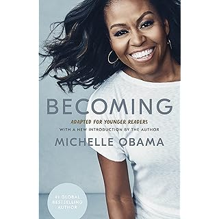

The Sunday Times Number One Bestseller
Now in paperback featuring a new introduction by Michelle Obama, a letter from the author to her younger self, and a book club guide with 20 discussion questions and a 5-question Q&A, the intimate, powerful, and inspiring memoir by the former First Lady of the United States.
In her memoir, a work of deep reflection and mesmerizing storytelling, Michelle Obama invites readers into her world, chronicling the experiences that have shaped her from her childhood on the South Side of Chicago to her years as an executive balancing the demands of motherhood and work, to her time spent at the world's most famous address. With unerring honesty and lively wit, she describes her triumphs and her disappointments, both public and private, telling her full story as she has lived it in her own words and on her own terms.
Warm, wise, and revelatory, Becoming is the deeply personal reckoning of a woman of soul and substance who has steadily defied expectations and whose story inspires us to do the same.
★
★
★
★
★
Explore More Books